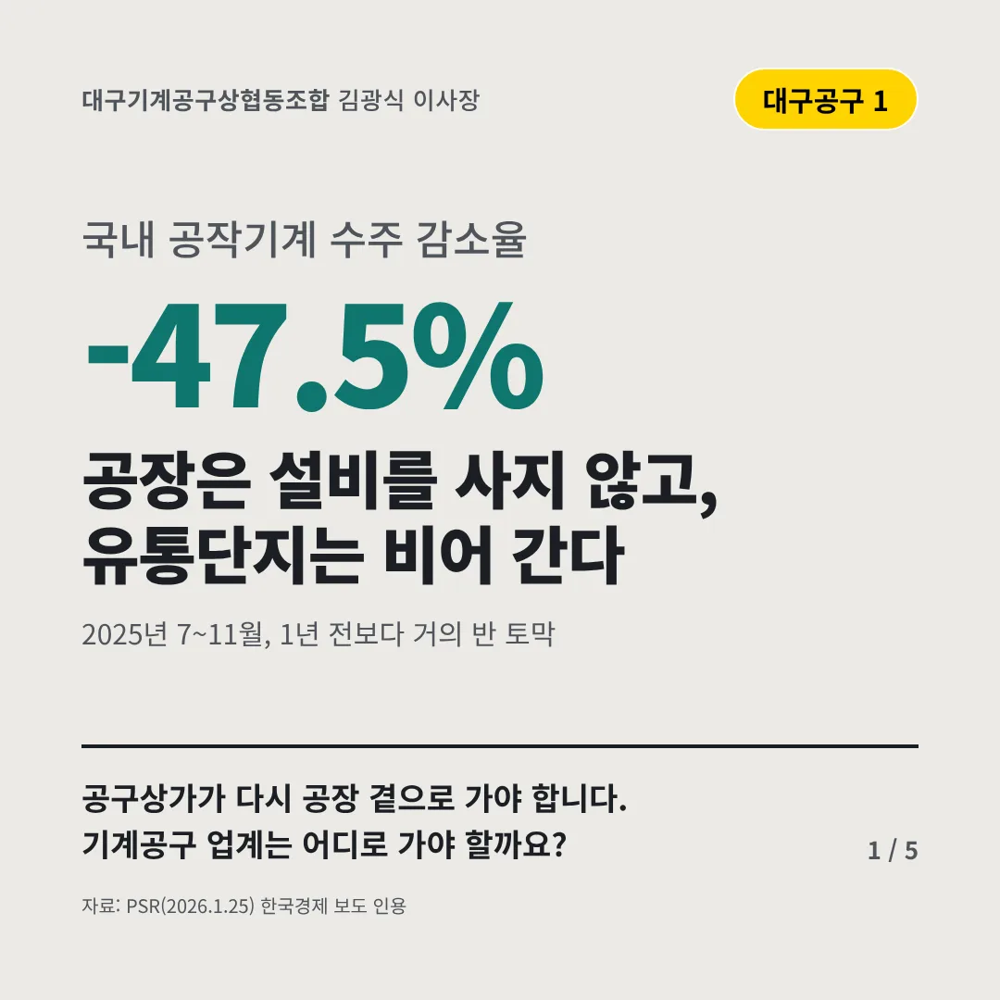
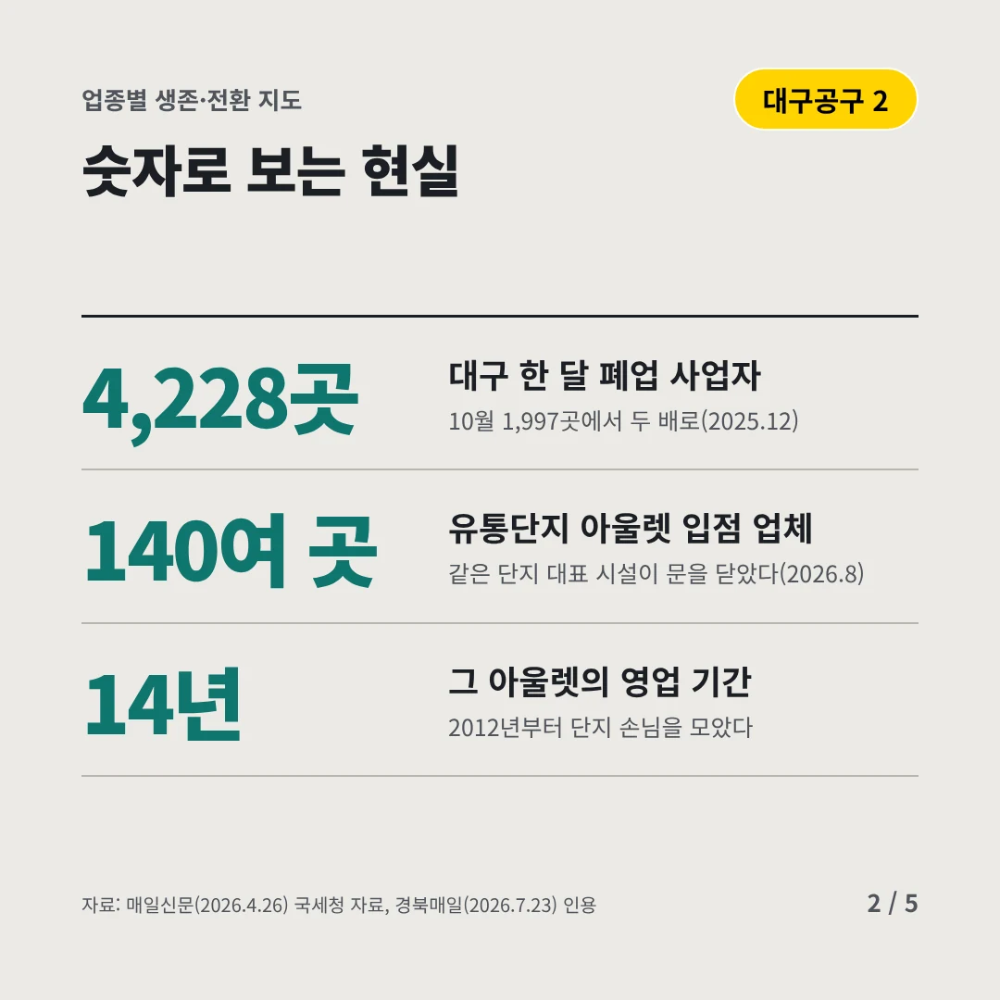
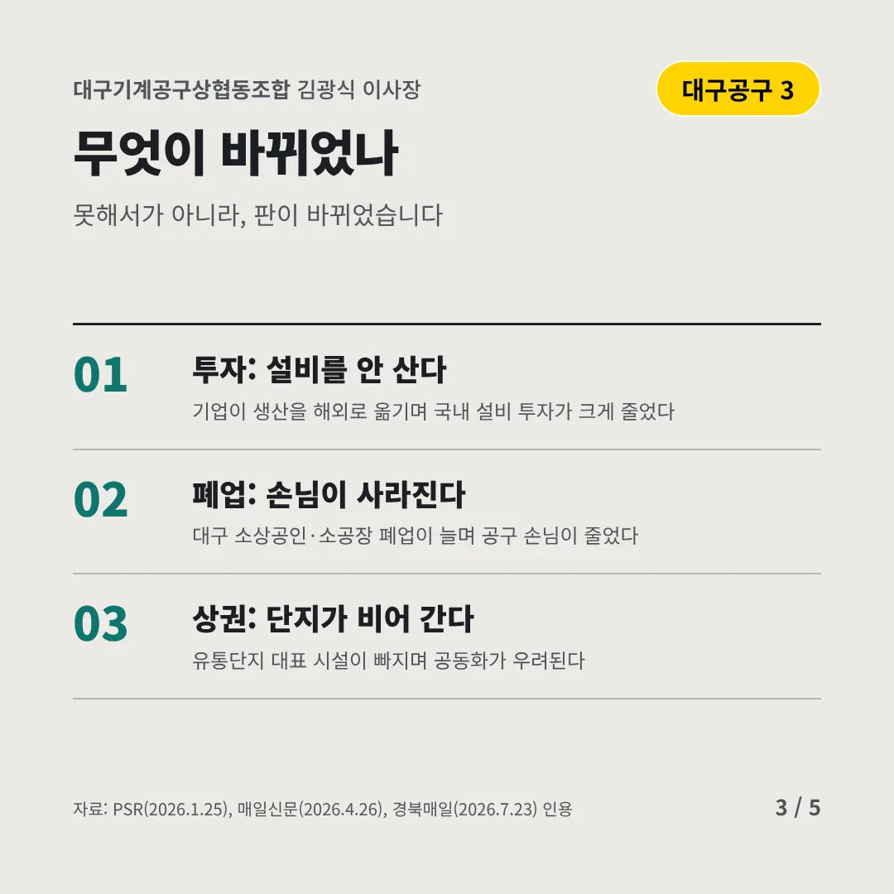
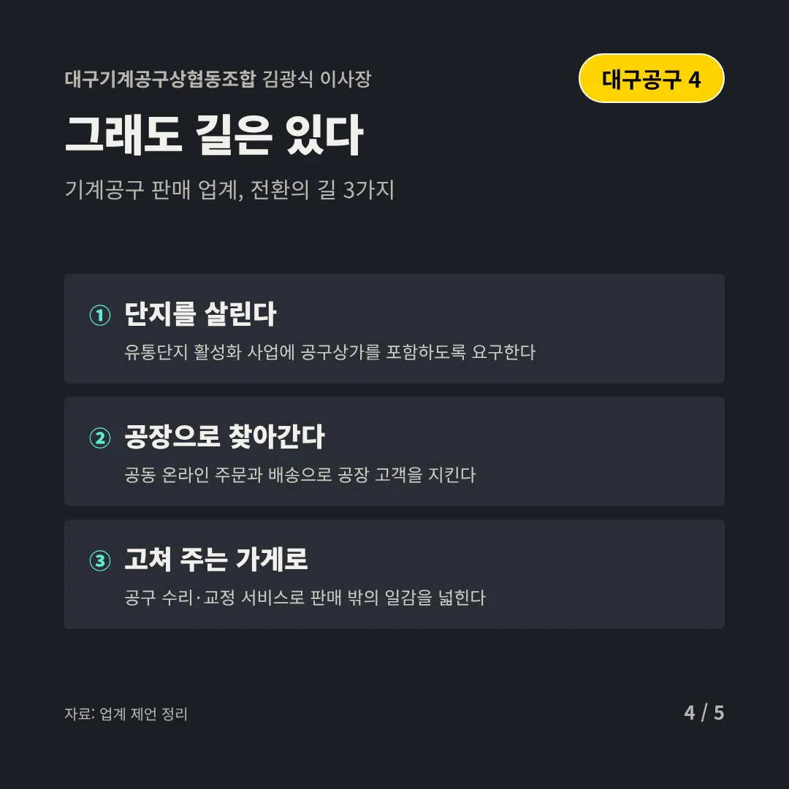
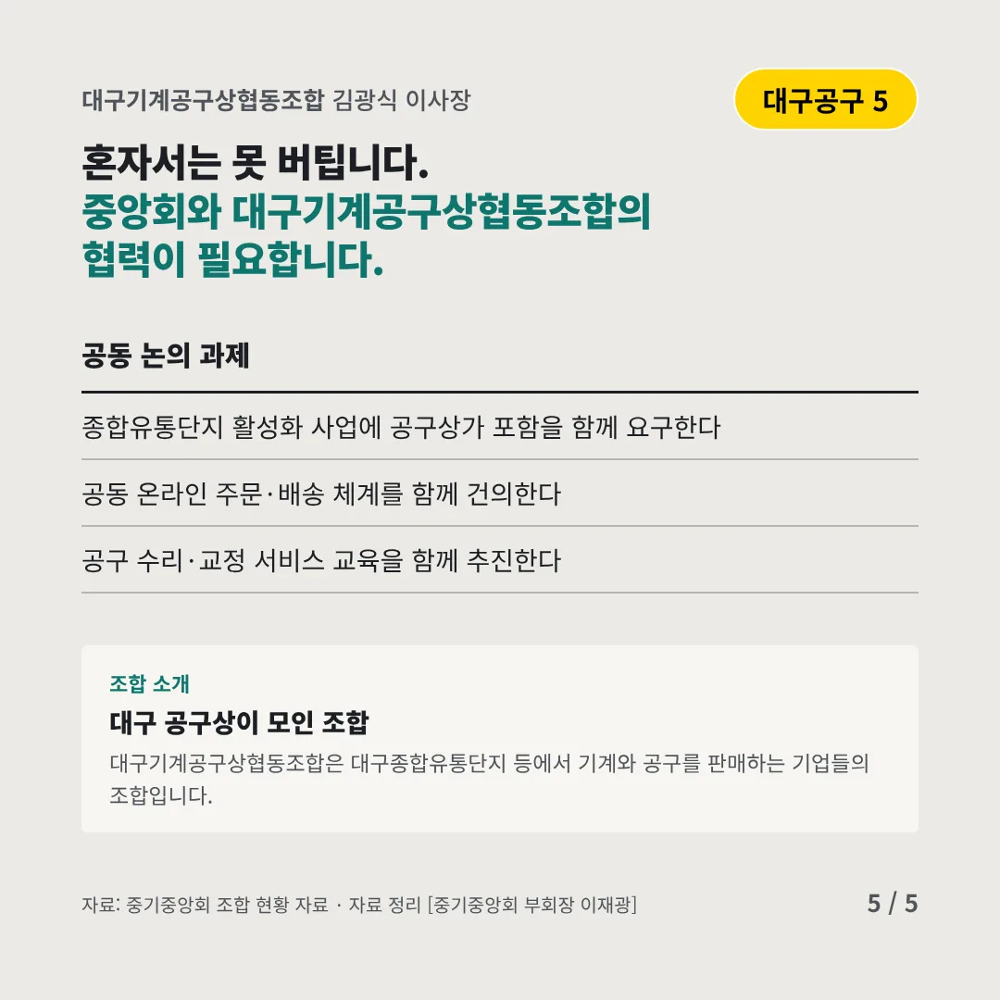
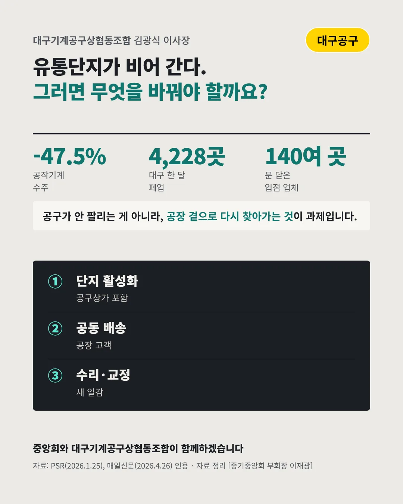

대구기계공구상협동조합
공장은 설비를 사지 않고, 유통단지는 비어 간다
-47.5% 국내 공작기계 수주 감소율






공구상가가 다시 공장 곁으로 가야 합니다. 기계공구 업계는 어디로 가야 할까요?
숫자로 보는 현실
- 4,228곳대구 한 달 폐업 사업자10월 1,997곳에서 두 배로(2025.12)
- 140여 곳유통단지 아울렛 입점 업체같은 단지 대표 시설이 문을 닫았다(2026.8)
- 14년그 아울렛의 영업 기간2012년부터 단지 손님을 모았다
무엇이 바뀌었나
- 투자: 설비를 안 산다기업이 생산을 해외로 옮기며 국내 설비 투자가 크게 줄었다
- 폐업: 손님이 사라진다대구 소상공인·소공장 폐업이 늘며 공구 손님이 줄었다
- 상권: 단지가 비어 간다유통단지 대표 시설이 빠지며 공동화가 우려된다
그래도 길은 있다
- 단지를 살린다유통단지 활성화 사업에 공구상가를 포함하도록 요구한다
- 공장으로 찾아간다공동 온라인 주문과 배송으로 공장 고객을 지킨다
- 고쳐 주는 가게로공구 수리·교정 서비스로 판매 밖의 일감을 넓힌다
한 장 요약

조합 소개
대구기계공구상협동조합은 대구종합유통단지 등에서 기계와 공구를 판매하는 기업들의 조합입니다.
자료: PSR(2026.1.25), 매일신문(2026.4.26), 경북매일(2026.7.23)